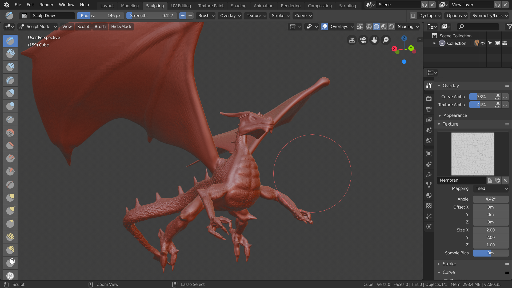
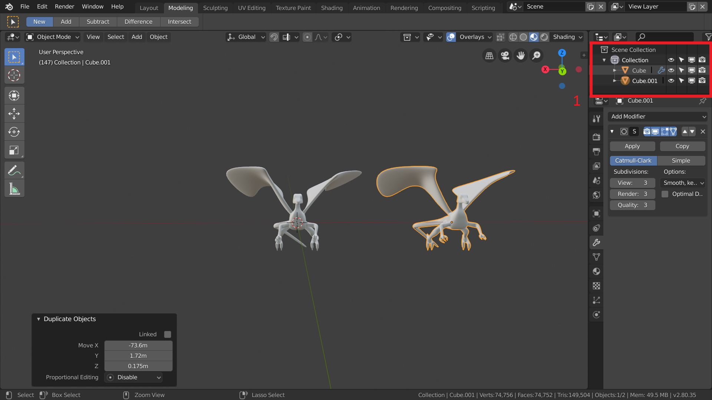
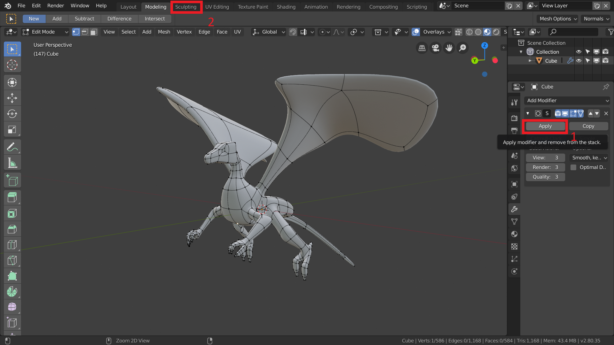
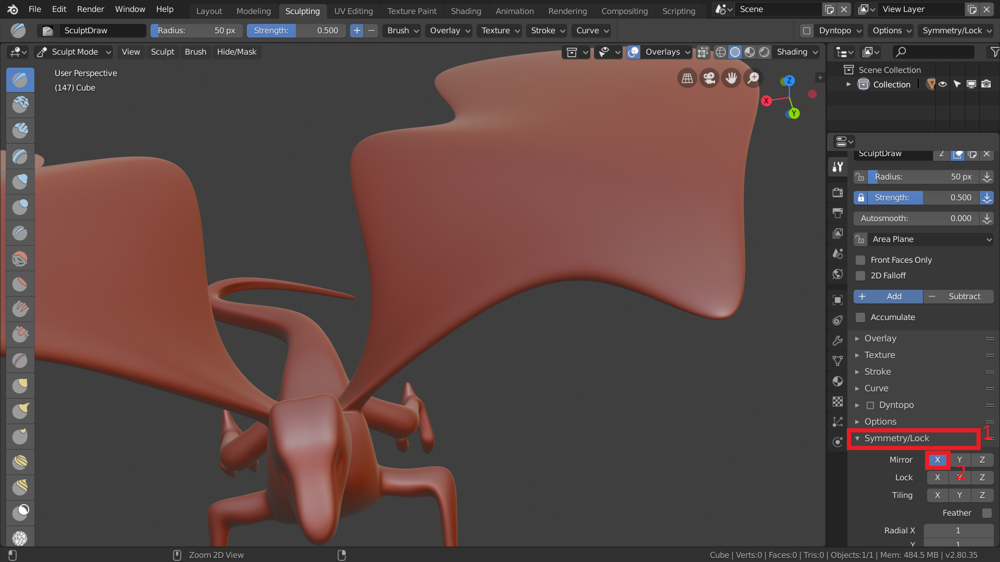
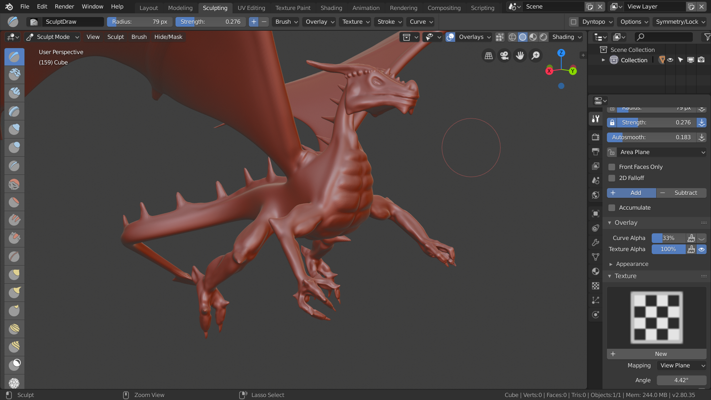
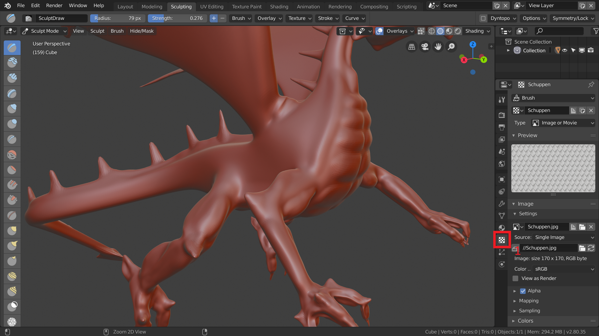
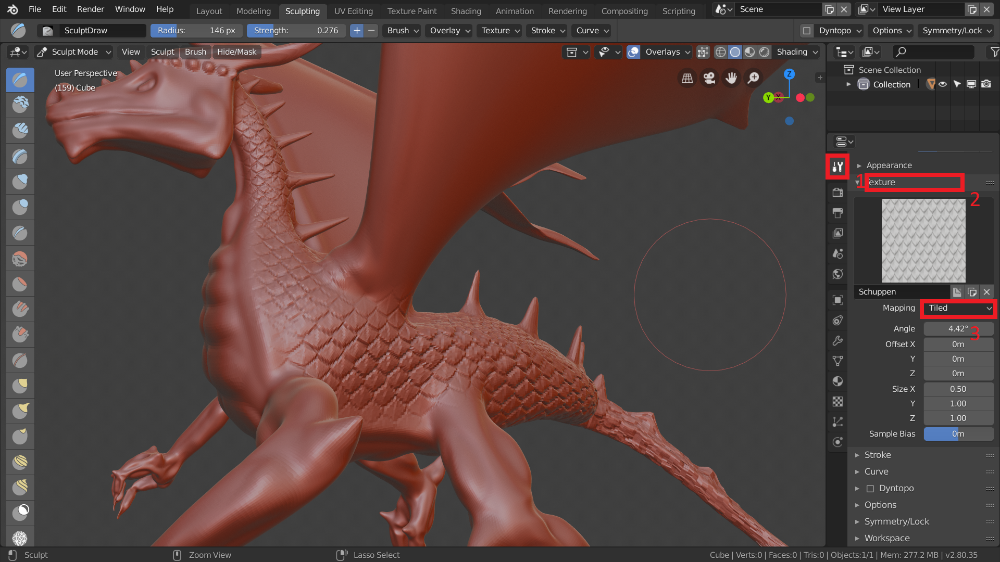
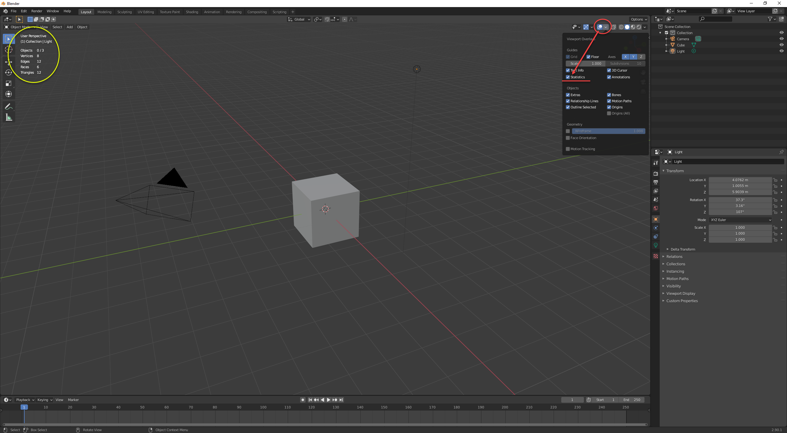

Übung 3.2 - Sculpting*
*Die Bearbeitung dieser Aufgabe ist freiwillig!
Sculpting
Das folgende Kapitel gibt einen kurzen Überblick zu Sculpting. Mit Sculpting lassen sich sehr schöne Details erarbeiten. Als Beispiel nutzen wir den groben, mit Clay-Modelling erstellten Drachen aus der vorherigen Übung.

1. Vorbereitung
- Öffnet euren Drachen.

- Dupliziert ihn mit
Shift + Dund blendet das Duplikat im Outliner (1) oder mitHaus.

- Wendet euren Subdivision Surface nun an indem ihr auf apply (1) drückt.
- Fügt eurem Drachen einen Multiresolution-Modifier hinzu und klickt zwei mal auf Subdivide.
- Wechselt nun zum Sculpting Workspace (2).
2. Sculpting
Im Sculpting werden euch unterschiedlichste Pinsel zur verfügung gestellt, die alle das Mesh auf unterschiedliche Weise verändern.

- Wenn euer Mesh nicht perfekt symmetrisch ist, solltet ihr als Erstes im Reiter Symmetry/Lock (1) den Mirror (2) deaktivieren.

- Testet jetzt die unterschiedlichen Pinsel indem ihr Details am Drachen hinzufügt.

- Ladet jetzt die Schuppentextur in eure Texturen, indem Ihr im Texture-Panel (1) eine neue Textur erstellt und die beigefügte Textur einladet.
{kind=link}

- Geht zurück in die Tool settings (1) und öffnet den Tab “Texture” (2). Wählt dort die frisch erstellte Textur aus und stellt das Mapping (3) auf “Tiled”.
- Gebt eurem Drachen nun noch Schuppen.
Aufgabenstellung
- Stellen Sie Ihren Drachen fertig und laden Sie - sofern möglich - die .blend und einen Screenshot hoch. Beachten Sie dazu folgenden Hinweis:
Hinweis zur Dateigröße
Digital Scultping ist eine polygon-generative Modelliermethode, das bedeutet die Polygonanzahl (Polycount) schnellt beachtsam in die Höhe, da Sie additiv Volumen aufziehen, was nur durch feinere Unterteilung des Meshes möglich ist.
Nicht zu empfehlen, wenn die Polygonanzahl bzw. die Speichergröße eine Rolle spielt, wie z.B. bei der Verwendung in Mobile Games. Auf mobilen Plattformen stehen oft weniger Hardwareressourcen zur Verfügung. Daher muss ressourcenschonend produziert und entsprechend der Polycount beobachtet werden.
Denn mit steigendem Polycount wächst auch gleichzeitig die Speichergröße der Blender-Szenendateien bzw. der Geometrie: dem Drachen. Dadurch kann es sein, dass die Datei für das Hochladen in FELIX zu groß wird.
Lösung: Screenshot mit eingelendeten Statistics erstellen
Sollte Ihre .blend als Abgabe zu groß werden (auch gezippt als RAR oder ZIP-Archiv), aktivieren Sie bitte die Statistics (Viewport Overlays > Statistics) im Viewport und laden Sie stattdessen einen Screenshot hoch.
Auf dem Screenshot muss der Polycount und Ihr gesculpteter Drache in geeigneter 3D-Perspektive zu sehen sein! Schießen Sie einfach das gesamte Blender Window (maximiert), wie auch der Screenshot unten.
Statistics einblenden
